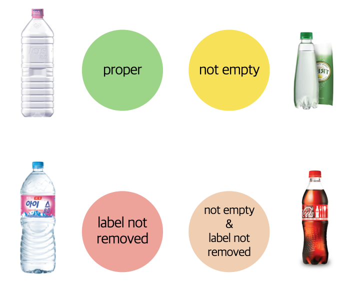
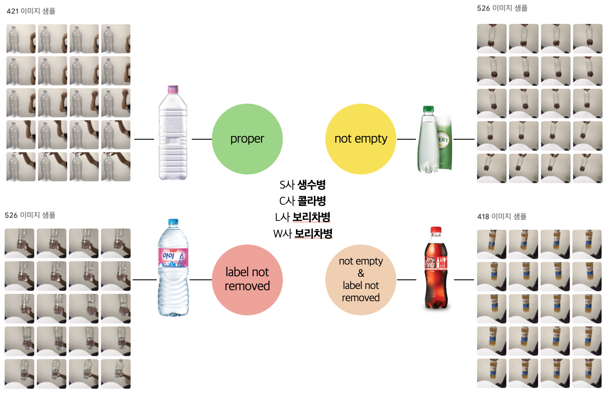
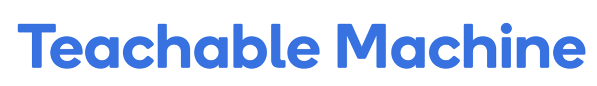
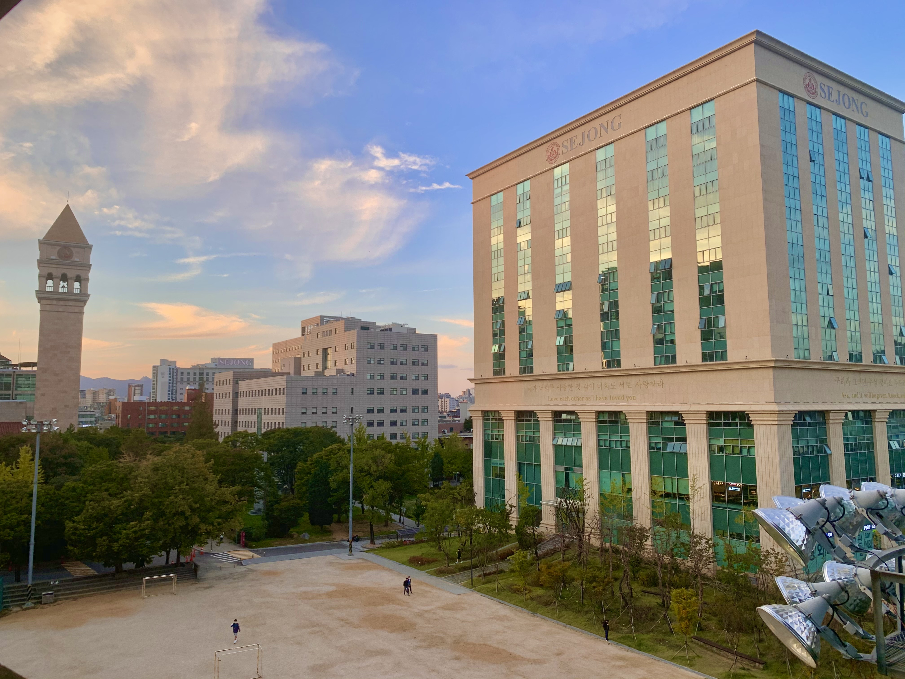

현대 사회를 살아가는 우리들에게 귀찮아도 꼭 해야하는 일이 있습니다. 바로 분리수거죠. 그 중에서도 투명 페트병 분리수거는 많은 사람들이 헷갈려하는 부분입니다. 보통 페트병은 플라스틱류로 분류됩니다. 지나가다 분리수거장이 보여도 물이나 음료를 마시고 그대로 플라스틱으로 분리수거 하는 경우가 다반사죠. 하지만 환경부의 지침에 따르면 투명 페트병은 따로 투명 페트병 전용배출 수거함에 버려야 하며, 버릴 때는 속을 모두 깨끗하게 비우고 겉에 붙어있는 라벨도 모두 제거해야 합니다. 물이 아닌 음료가 들어 있을 경우 오염의 문제가 발생하고, 라벨의 경우 잉크로 인한 재활용 가치 감소, 그리고 분리 과정에서의 공정비용과 인력의 문제까지 존재합니다.
그럼에도 불구하고 많은 사람들은 이 사실을 모르거나, 알면서도 잘 지키지 않습니다. 심지어 구청 분리수거장에만 가봐도 구청 직원들이 무심코 버려놓은 페트병들이 있다고 합니다.
적절한 재활용, 이제는 필요합니다.
Model

분리수거장에 투명페트병 전용배출을 위한 수거 기계를 만든다고 가정해봅시다. 여러 부분에서 인공지능을 활용할 수 있겠지만 그 중에서도 가장 초기 단계, 물을 제외한 내용물의 유무와 라벨의 부착 여부를 판단하는 과정에서 Teachable Machine을 활용해보았습니다.
먼저 분류할 클래스를 네 개로 설정했습니다. 투명 페트병이 이미지로 입력되었을 때,
- 해당 페트병의 내용물이 없고, 라벨이 제거된 상태라면 Proper,
- 라벨은 없으나 내용물이 있으면 not empty,
- 내용물은 없으나 라벨을 떼지 않은 상태라면 label not removed
- 라벨과 내용물이 함께 있는 상태라면 두 상태를 동시에 나타내는 클래스까지 설정해 보았습니다.
각각에 대한 입력은 실제 웹캠을 사용하여 제 집에 있던 생수병과 콜라병을 포함한 다양한 투명페트병을 활용했습니다.
Data

S사의 생수병, C사의 콜라병, L사와 W사의 보리차병을 이용했으며, 각각 라벨을 떼고 내용물을 넣었다가 비웠다가 하며 학습 데이터를 모았습니다. 보통 사람들이 손으로 들고 카메라 앞에 설 것을 고려하여 학습 자체도 손으로 잡은 모습이 나오도록 사진을 찍었습니다.
각 클래스마다 약 400~600장 가량의 이미지 데이터로 정리하였습니다.
Platform

해당 인공지능은 코딩이 필요 없는
Teachable Machine
사이트에서 데이터 입력과 학습, 모델 생성까지 완성했습니다. 이미지 프로젝트 뿐만 아니라 오디오 프로젝트까지 해볼 수 있는 유용한 플랫폼입니다.
Feedback

이렇게 만든 모델은 카메라에 연결하여 많은 사람들이 이용하는 분리수거장이나, 투명 페트병 개별 분리 기계 등에 사용할 수 있을 것입니다. proper class로 분류됐을 때만 뚜껑을 열어주는 등의 기능을 추가하면 좋겠죠.
추가적으로 해당 페트병이 투명 페트병인지 유색 페트병인지 자체도 분류해야 할 것이며, 만약 사이다나 탄산수 등이 들어있을 경우에는 물과 구분하기 힘들 것 같다는 생각도 듭니다. 내용물의 유무는 비전으로 처리하기보다 무게 센서 등을 활용하는 것이 훨씬 효율적일 것 같습니다.
이처럼 생활 속 사소한 부분에서도 인공지능을 활용할 수 있습니다. 우리도 마찬가지로 그런 사소한 부분에 조금씩 신경을 쓰다 보면